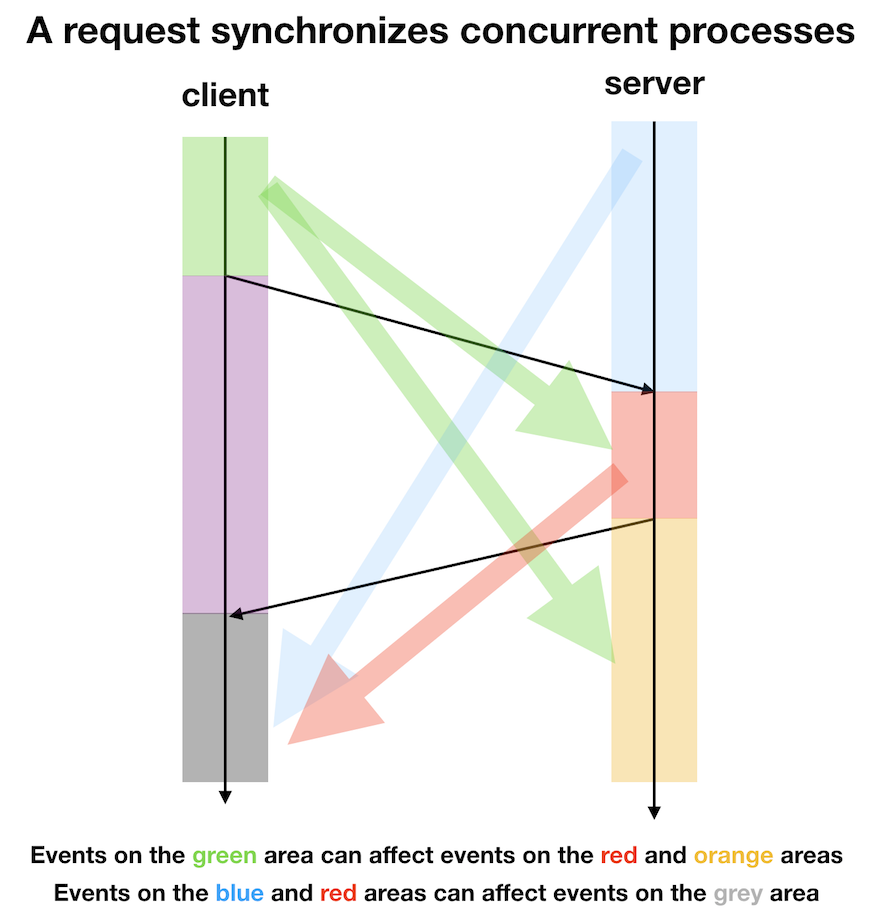

Persistent state
How real is our success confirmation?
We've seen that, when someone asks us to do some operation, either:
- We do it completely and respond with a success confirmation (an acknowledgment, or ack, for short).
- We do it partially (or not at all) and crash.
From the perspective of the client, we know that we can't make any assumption about the success of the operation if we don't get a confirmation response in time.
But if we do get an ack, what does it mean, exactly?
The simplistic assumption to make is that all consequences of our request are, at and after that point, completely and permanently in effect.
For instance, I might assume that, after I get confirmation that foo=42 has been saved in a database, and nobody else overwrites such save, then every subsequent query for foo to the database will get 42.
Sadly, this is isn't realistic.
When hard disks break
The database is stored in a hard disk somewhere. At some point, this hard disk will stop working.
In this scenario, it's obvious that the assumption that we did above doesn't hold anymore. The acknowledgment that we get from the database just means that subsequent queries probably will get the value we stored. But it can also be lost forever.
Needless to say, a system that just loses its data from time to time is probably providing a terrible service, depending on our needs.
So there's a tension between:
- The fact that disks die.
- Our preference for acknowledged operation's consequences to persist in time.
Backups
A first step to address the problem of disks dying is to make backups. If a disk dies, then we just swap it by one its backups. (We call this process a failover.)
Considering just one backup (you probably want more than one):
foo=13 Note right of backup: Backup:
foo=13 c1 ->> db: set foo=42 Note right of db: Database:
foo=42 Note right of backup: Backup:
foo=13 db ->> c1: ok c2 ->> db: get foo db ->> c2: 42 Note right of db: Backup time! db ->> backup: start backup (somehow) Note right of db: Database:
foo=42 Note right of backup: Backup:
foo=42 backup ->> db: ok Note right of db: Database is dead! Backup will serve from now on. c1 ->> backup: get foo backup ->> c1: 42
This is definitely an improvement: in case of failure, we fall back to the last backed up state of the database, not to emptiness.
Continuous backup of changes = replication
Once we've decided we're doing backups, we're faced with a question: how and when should we make them?
The simplest way of backing up a database is to just copy all the data at any given time, from time to time.
foo=42 Note right of backup: Backup: clients ->> db: bar="baz" Note right of db: Database:
foo=42,
bar="baz" Note right of backup: Backup: clients ->> db: qux=13.37 Note right of db: Database:
foo=42,
bar="baz",
qux=13.37 Note right of backup: Backup: Note right of db: Backup time! db ->> backup: all the data Note right of db: Database:
foo=42,
bar="baz",
qux=13.37 Note right of backup: Backup:
foo=42,
bar="baz",
qux=13.37 clients ->> db: a=123 Note right of db: Database:
foo=42,
bar="baz",
qux=13.37,
a=123 Note right of backup: Backup:
foo=42,
bar="baz",
qux=13.37 clients ->> db: foo=0 Note right of db: Database:
foo=0,
bar="baz",
qux=13.37,
a=123 Note right of backup: Backup:
foo=42,
bar="baz",
qux=13.37 Note right of db: Backup time! db ->> backup: all the data Note right of db: Database:
foo=0,
bar="baz",
qux=13.37,
a=123 Note right of backup: Backup:
foo=0,
bar="baz",
qux=13.37,
a=123
However, it's easy to see this way is not ideal:
- It's probably not very efficient. Lots of data won't have changed between a backup and the next, so copying the same data again is a waste of resources.
- It introduces a lengthy period of inconsistency between a backup and the next. If the database fails during that interval, we'll fall back to data that can be badly outdated.
What should we do instead? We can emit an event with each change that is processed as soon as possible. Instead of copying the data, we copy the events that change the data.
This is what we usually understand by replication. The "backup" databases are then called replicas or secondary (or slaves, which is failing into disuse), while the database that accepts write requests is called leader or primary (or master, which is also falling into disuse).
foo=42 db ->> backup: foo=42 Note right of backup: Backup:
foo=42 clients ->> db: bar="baz" Note right of db: Database:
foo=42,
bar="baz" db ->> backup: bar="baz" Note right of backup: Backup:
foo=42,
bar="baz" clients ->> db: qux=13.37 Note right of db: Database:
foo=42,
bar="baz",
qux=13.37 db ->> backup: qux=13.37 Note right of backup: Backup:
foo=42,
bar="baz",
qux=13.37 clients ->> db: a=123 Note right of db: Database:
foo=42,
bar="baz",
qux=13.37,
a=123 db ->> backup: a=123 Note right of backup: Backup:
foo=42,
bar="baz",
qux=13.37,
a=123 clients ->> db: foo=0 Note right of db: Database:
foo=0,
bar="baz",
qux=13.37,
a=123 db ->> backup: foo=0 Note right of backup: Backup:
foo=0,
bar="baz",
qux=13.37,
a=123
Sync vs. async
In the last chapter, we saw that two concurrent processes can collaborate by synchronizing, that is, establishing a point of communication after which they can safely set causal relationships between their new events and the other process's older events.
In simpler words, you let another process see some of the data that your events produced, so that it can do something with that data.
A request and its response establish a window of synchronicity between the participants:
- The request carries data from the client to the server.
- The response, at the very least, signals to the client that the server did something with that data.
Those are two synchronization events: the request can do things as a consequence of what happened on the client, and then, the client can do things as a consequence of the server having processed its request.

With this in mind, we can categorize the events that happen while handling a request (that is, in the server, between a request is received and its response is sent) as:
- Synchronous: The event happens in this window, before the response is sent.
- Asynchronous: Not synchronous. The event happens concurrently with the window: it may happen before or after the response is sent.
This is a useful distinction to which we will return in future chapters.
To consider a operation carried out as part of processing the request to be synchronous means that the server waits for its completion (either as an ack, or as a timeout) before responding to the client.
On the other hand, an asynchronous operation may be initiated inside the request handler, but it is not waited for completion before responding.
As often, there's no right way to do things; both doing things synchronously or asynchronously have their advantages.
Replication strategies
Synchronous replication
Synchronous replication means that we don't acknowledge a save to the database as successful until saves to all the replicas are acknowledged as successful too.
This is useful because then, if a failover occurs, we're sure that we won't see an outdated version of the data, ie. a version that was overwritten at some point in the past by a successfully acknowledged write to the database.
Remember the assumption we used above?
For instance, I might assume that, after I get confirmation that
foo=42has been saved in a database, and nobody else overwrites such save, then every subsequent query forfooto the database will get42.
Under synchronous replication, this holds while there's at least one replica of the data accessible somewhere. As it is extremely unlikely that all replicas are dead at any given time, this strategy basically makes writes unforgettable, so it makes this assumption reasonable.
This strategy has two downsides:
- If any single replica fails, we're under a partial failure scenario: some replicas may have the new data while others may not, so the system is left in an inconsistent state. The client needs to retry the operation to restore consistency.
- The latency (the time since the client sends a request until it receives a response) of the whole operation is bounded by the latency of the slowest of the replicas.
Note that this is equivalent to the let-it-crash strategy we've seen before for partial failures.
Asynchronous replication
Under asynchronous replication, we acknowledge a save after we've persistently stored it in our primary database's disk, but we don't wait for saves to replicas to complete.
This allows us to respond quickly to a write request, but then we have no guarantee about whether or when the replicas will process the write.
Replication lag
As we'll study in detail in future chapters, responding quickly by doing part of the work asynchronously doesn't magically make the work free. We basically trade off reduced latency by increased memory consumption and/or lost data.
In this case, since a write is acknowledged by the primary until it is processes by all async replicas, we need to store the fact that it happened somewhere, so that the replicas can consume the event from there. This somewhere is called the replication log.
The amount of time between a write enters this log and it is consumed by the slowest replica is called replication lag.
If one or more replicas become slow for some reason, or if they can't keep up with the pace of writes to the database, the replication lag will increase and the replication log will grow indefinitely, until it is too big to fit in wherever it is kept.
At that point, we can either start dropping data from it or stop accepting new writes.
Reading from replicas
So far, replicas have been just sitting there, keeping themselves up to date and waiting for a failover to being promoted to primary and have a chance to do something useful. But what if we put them to use before that?
We've seen two ways replicas may not be up-to-date with the leader:
- Under asynchronous replication, the replication lag may not be zero.
- Under synchronous replication, a write may have failed, leaving some replicas outdated.
If we can afford reading data that is not completely up-to-date, we can use replicas to perform reads.
This reduces reads-per-second in our primary database.
Leaderless databases
OK, so what if we don't just allow reads from replicas, but also writes?
Well, to begin with, they stop being replicas. They're no longer storing replicated data that is also stored somewhere else, but, for a while at least, they hold data that no other machine holds.
When more than one machine accept writes, we no longer have leaders: we have a leaderless database.
In this scenario, typically all machines that accept writes act as replicas to all other machines that accept writes. (There might be additional read-only replicas.)
Why would we want to do this?
- Failover is trivial: just retry the write in another machine.
- We can scale by adding more machines: each machine will receive only a portion of the requests.
Quorum
Being leaderless is independent of the replication strategy used, but it opens the door to a middle ground between synchronous and asynchronous replication: write synchronously to, and read synchronously from, only a majority of the machines, instead of all of them. This is called quorum consistency.
They key is that, if you write to a majority of machines, then a read to a majority of machines will necessarily overlap at least in one machine with the newest write. The read can then select the newest version of the retrieved data.
This greatly reduces the chances of inconsistency, at the expense of making writes and reads more expensive, as they need to go to more machines.
Note that inconsistency may still occur: some machines that acknowledged the write can then die, and then the new majority may not include any machine with that write. Also, the partial failure scenario of synchronous replication can still occur here.
Dealing with conflicts
Accepting writes in more than one machine at the same time means they can contradict each other. What happens if one machine accepts foo=42 while concurrently another machine accepts foo=13? Eventually, all machines in the system will be presented with both writes. What should they do?
Last write wins
The easiest approach is to not deal with the conflict at all: make some choice between two conflicting writes and discard the other. This choice is made in all machines in the system, and needs to be deterministic so that the system keeps being eventually consistent, ie. machines don't contradict each other in the long run.
The usual way to choose one write over the other is that writes are tagged with the time they were first processed. Then, each node just chooses the write that seems to have happened more recently.
Note that, as clocks aren't perfectly synchronized between machines, this may not actually be the case; but, even if it was, we could very easily be losing writes.
Consider a counter that starts at zero. If the system receives T1: counter=1 (T1, T2, etc., being the time tag), then some client reads this and increases the counter by writing T2: counter=2, then all is fine. But if the system receives T1: counter=1, and concurrently some client reads the counter and sees counter=0, and then attempts to increase the counter by writing T2: counter=1, then the final state that will eventually be chosen by all machines is T2: counter=1. We have lost an increase.
Read repair
Another technique is that, on noticing conflicting writes, store both, and let clients that read the data later perform a read repair by clarifying which final value should be kept, following whatever logic they choose.
But how can we detect conflicting writes?
In the example above, if a client sends T1: counter=1 and another client sends T2: counter=1, we know that there's a conflict: we have two increases, but the second client didn't take into account the first, concurrent increase. However, if we see T1: counter=1 and T2: counter=2, then there's no conflict: the final value of the counter coincides with the amount of increases performed, so the second client must have seen the T1: counter=1, and derived T2: counter=2 from it.
The trick is to tag each write with the version they're based on. There are several ways of doing this with different properties, but they broadly called logical clocks. See Why Logical Clocks are Easy if you're interested in details.
In the example above, in the conflicting scenario, the database would store both T1: counter=1 and T2: counter=1. When a client then reads the counter, it will be presented with both values. It can then merge them with a logic that makes sense; in this case, it can add their values to get a total count of T3: counter=2. This will be sent back to the database, which can then discard the conflicting values and store the merged value instead.
CRDTs
CRDT stands for Conflict-free Replicated Data Type. Those are types on which all operations are:
- Commutative.
- Associative.
- Idempotent.
This means that processing any number of writes to the same CRDT yields the same result, no matter in which order they're applied, or even how many times each of them is performed.
A set to which you can only add items is a trivial example of a CRDT. But there are others, for many useful scenarios.
CRDTs have the additional nice property of being idempotent, which is a property that many databases just sweep under the rug but that we've seen how important it is.
Linearizability: consistent-first robustness
There are leaderless systems that act as if they were a single machine with at all times, even if some machines fail.
This property of a whole distributed system acting as a single machine that processes operations one after another and keeps the data consistent between one operation and the next is called linearizability.
In practice, this is achieved with databases that achieve consensus. ZooKeeper, etcd and Consul are examples of such databases.
The downside is that such systems are usually very slow, and can't process that many writes per second. But for data that is small, changes not that frequently and is critical to keep fully consistent, linearizability is usually worth it.
This is an active area of research, however, and recently more databases are appearing with this or slightly lower consistency guarantees while still being distributed, fault-tolerant, and fast. Look into Spanner, FoundationDB and CockroachDB as examples of such databases.
Durability vs. latency
The ability to not lose data once you've acknowledged as written is called durability.
Roughly speaking, techniques that increase durability also increase latency. Making data durable means saving it deeper, in more reliable places, that will survive a reboot or even a whole disk failure.
There are systems that optimize for latency rather than durability. That's what caches usually do, for example: since the data they store is also stored (durably) somewhere else, or it can be recomputed, or we can afford to just lose it, they don't bother storing it in disk: they keep it in memory, which is way faster to access than the disk.
Partitioning
As you can imagine, storing data gets hard as a system gets more users. You get:
- More requests per second.
- More volume of data: queries need to search more data to get a result.
- Data may no longer fit in a single disk.
- Replicas may no longer be able to keep up with the pace of writes.
Sooner or later, you will have to not just store the same data in several places (replication), but also put different data in different places (partitioning).
This reduces the load in each partition, effectively eliminating bottlenecks and single points of failure. It is key to achieve a scalable system.
Partitioning by keeping separate databases
This is the easiest way to partition your data: just keep separate, completely independent databases.
The downside is that you can't make queries that search all your data.
Partitioning a single database
You can also partition a single database, so that you're able to query the whole database. This usually is handled by the database system you're using.
Indexing a partitioned database
Often, we want to query data not by its primary key (IDs), but by other fields (name, some date, etc.).
We do this efficiently by declaring an index. An index makes queries efficient roughly by making an ordered list of data; then, a query doesn't need to search all documents/rows/objects, just those within the limits of what we're querying.
Keeping an index in sync with the data is easy in a single partition, but things get more involved in a partitioned database. There are two main approaches.
Partitioned index
The index, ie. the list, lives in its own machine. Each time a write occurs, an additional write needs to be performed to each of the affected indexes's machines to keep it updated.
Slow writes, fast reads, as a query by an indexed field only needs to look up one machine.
Scatter-gather
Keep partial indexes in the same partition in which the data lives.
Fast writes, slow reads, as a query by an indexed field needs to go to all partitions for their partial indexes, then merge their results.